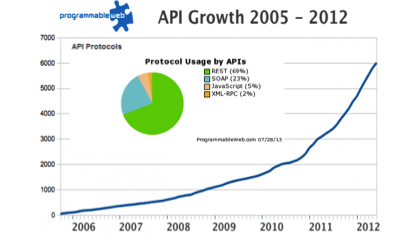

The HTTP conversations we have seen above provide the foundation for Web APIs. Web APIs are particularly important when a Linked Data application needs access to data that is being dynamically created. If a Linked Data application is using data about music artists and releases from the 1960s then few updates to the stored data will be required. If dynamically changing data is being used such as current weather conditions or traffic levels, then web APIs can be used to provide access to new data. A Web API can provide a range of functionalities, giving access to views on that data and also transforming the data in ways of use to other applications.
Over the past few years there has been a huge growth in the number of Web APIs, though most of these are not Linked Data Web APIs. The most common form of API is the REST (Representational State Transfer) API. REST is an architectural style that uses the HTTP protocol for communication between client and server. The Programmable Web is a general directory of Web APIs. This allows providers to register their API and other application developers to search for available APIs. The vast majority of Web APIs registered with the Programmable Web use the REST model.

Figure 39. Growth in WEP APIs [28].